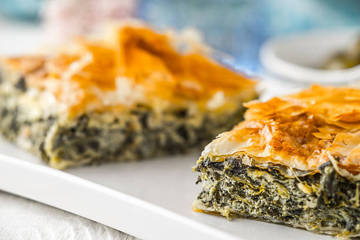

Jonathan's Spanakopita

Description
Spanakopita is one of my favourite dishes to make for pot lucks - it's easy to make, packed full of flavour and tastes just as good whether it's served hot or cold.
This is also something that most of your friends won't have tasted before, which is good for two reasons:
- You'll be introducing them to something new
- They won't have anything to compare it to, so yours will automatically be the best they've had!
This is also vegetarian, so there's less of a reason to worry about excluding those with a different dietary preference.
Ingredients
Makes approximately 6 party portions
- 15g olive oil
- 1 onion
- 1 tbsp minced garlic
- 1 kg frozen spinach
- 500g feta
- 1 small bunch of dill
- 1 tsp dried oregano
- 1 tsp lemon juice
- 1 pack of filo pastry
Steps
- Preheat oven to 180C
- Add olive oil, garlic and onion to a large saucepan and simmer until softened
- Add frozen spinach and simmer until excess water has been released - you may need to add some water to aid the defrosting process
- Once the spinach has released most of its water, remove the pan from the heat and allow to cool slightly
- Add the feta, dill, oregano and lemon juice
- Lay four or five of the filo sheets to the bottom of an oven safe dish, drizzling olive oil on each layer
- Add the spinach mixture to an oven safe dish and top with another four or five sheets of filo, drizzling with olive oil
- Add the dish to the oven and bake for 45 minutes, or until golden and crunchy